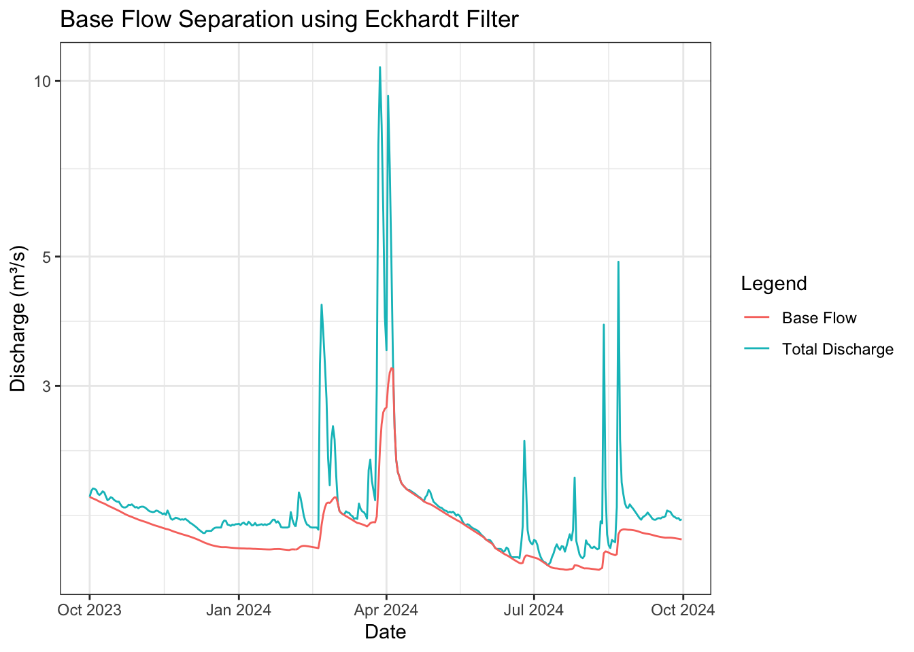

options(repos = c(CRAN = "https://cloud.r-project.org")) # set mirror
install.packages(c("grwat", "dataRetrieval", "dplyr", "sf", "ggplot2"))
library(grwat)
library(dataRetrieval)
library(dplyr)
library(sf)
library(ggplot2)Eckhardt Filter Example
In this example, we will demonstrate how to use the Eckhardt filter for base-flow separation using the FlowScreen package in R. We will download daily stream discharge data from a USGS streamgauge, estimate required parameters, apply the Eckhardt filter, and visualize the results.
Install packages
Load dataset
Here we load in a stream discharge dataset from a USGS streamgage using the DataRetrieval package. We are loading in stream discharge from the Verde River near Clarkdale, AZ streamgauge.
# Download raw data from USGS NWIS
verde_daily.raw <- read_waterdata_daily(monitoring_location_id = "USGS-09504000", # Verde River near Clarkdale, AZ
parameter_code = c("00060"), # discharge
statistic_id = "00003", # mean
time = c("2023-10-01", "2024-09-30")) # time range
# Process data - convert from cfs to cms and select relevant columns
verde_daily <- verde_daily.raw |>
st_drop_geometry() |>
select(time, value) |>
mutate(
discharge_cms = value / 35.3147 # cfs → cubic meters/ second
) |>
rename(date = time) |>
select(date, discharge_cms)Now we will plot the hydrograph of daily discharge for the Verde River near Clarkdale, AZ.
# Plot daily discharge time series
ggplot(verde_daily, aes(x = date, y = discharge_cms)) +
geom_line() +
scale_y_log10() + #log scale for better visualization
labs(
title = "Daily Stream Discharge (log scale) - Verde River near Clarkdale, AZ",
x = "Date",
y = "Discharge (m³/s)"
) +
theme_bw()
Conduct base-flow separation
Here we will estimate the required parameters for the Eckhardt filter and then apply the filter to the discharge data.
Estimate parameters
The Eckhardt filter requires two parameters:
- the recession constant (\(\alpha\)), which we estimate from an observed recession segment of the hydrograph, and
- the maximum base-flow index, (\(\text{BFI}\_{\max}\)), which we estimate using the backwards-filter approach of Collischonn and Fan (2013).
Estimate recession constant (\(\alpha\))
We first select a relatively clean recession period (low variability, often summer pre-monsoon) and fit a linear model to (\(\log(Q)\)) versus time.
For an exponential recession \(Q_t\) = \(Q_0\)\(\alpha^t\), the fitted line of \(\log(Q)\) versus \(t\) has a slope of \(\log(\alpha)\). Therefore, \[ \alpha = e^{\text{slope}} \]
library(dplyr)
## Select a recession period (adjust dates as needed)
verde_recession <- verde_daily |>
filter(
date >= as.Date("2024-05-01"),
date <= as.Date("2024-06-15"),
discharge_cms > 0
) |>
mutate(
t = as.numeric(date - min(date)), # time in days since start of recession
log_q = log(discharge_cms)
)
# Fit log(Q) ~ t to estimate recession constant alpha
rec_lm <- lm(log_q ~ t, data = verde_recession)
alpha_est <- exp(coef(rec_lm)[["t"]]) # recession constant
alpha_est[1] 0.9955225Estimate BFImax
We estimate BFImax using the backwards-filter method (Collischonn and Fan 2013). This method involves recursively estimating base flow backwards through the discharge record using the recession constant (\(\alpha\)) estimated in the previous step.
# Estimate BFImax using the Collischonn backwards-filter method
Q <- verde_daily$discharge_cms
n <- length(Q)
a <- alpha_est # recession constant from previous step
# Initialize backwards baseflow array
b_back <- numeric(n)
b_back[n] <- Q[n] # assume last day is baseflow-dominated
for (i in seq(from = n, to = 2)) {
b_candidate <- b_back[i] / a
b_back[i - 1] <- min(b_candidate, Q[i - 1])
}
# Collischonn estimate of BFImax
BFImax_est <- sum(b_back, na.rm = TRUE) / sum(Q, na.rm = TRUE)
BFImax_est[1] 0.9020147We can then pass alpha_est and BFImax_est into the Eckhardt filter.
Apply Eckhardt filter
library(FlowScreen)
base_flow <- bf_eckhardt(verde_daily$discharge_cms,
a = alpha_est, # recession constant
BFI= BFImax_est) # maximum base-flow index
# Combine base flow with original data
verde_daily_bf <- verde_daily %>%
mutate(base_flow_cms = base_flow)
# View first few rows of data with base flow
head(verde_daily_bf)# A tibble: 6 × 3
date discharge_cms base_flow_cms
<date> <dbl> <dbl>
1 2023-10-01 1.94 1.94
2 2023-10-02 1.98 1.93
3 2023-10-03 2.00 1.92
4 2023-10-04 2.00 1.92
5 2023-10-05 1.99 1.91
6 2023-10-06 1.96 1.91# Plot original discharge and base flow
ggplot(verde_daily_bf, aes(x = date)) +
geom_line(aes(y = discharge_cms, color = "Total Discharge")) +
geom_line(aes(y = base_flow_cms, color = "Base Flow")) +
scale_y_log10() + #log scale for better visualization
labs(
title = "Base Flow Separation using Eckhardt Filter",
x = "Date",
y = "Discharge (m³/s)",
color = "Legend"
) +
theme_bw()
Calculate BFI
Finally, we can calculate the base-flow index (BFI) for the period of record as the ratio of total base flow to total discharge.
total_base_flow <- sum(verde_daily_bf$base_flow_cms, na.rm = TRUE)
total_discharge <- sum(verde_daily_bf$discharge_cms, na.rm = TRUE)
BFI <- total_base_flow / total_dischargeThe BFI for the Verde River near Clarkdale, AZ is 0.874 using the Eckhardt filter.
References
Collischonn, Walter, and Fernando Mainardi Fan. 2013. “Defining Parameters for Eckhardt’s Digital Baseflow Filter.” Hydrological Processes 27 (18): 2614–22. https://doi.org/10.1002/hyp.9391.